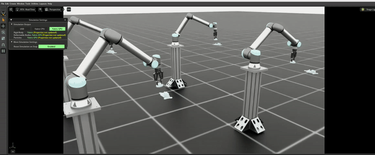
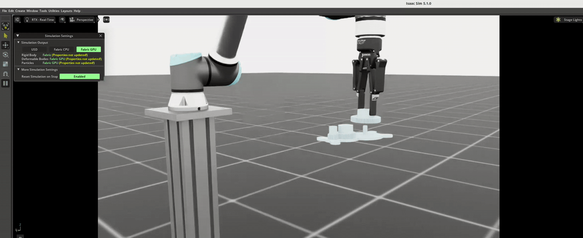
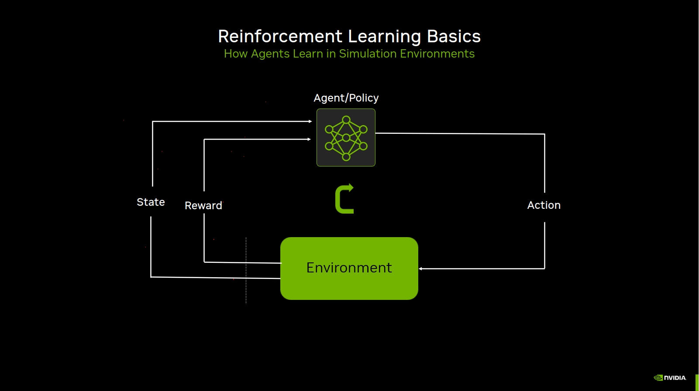
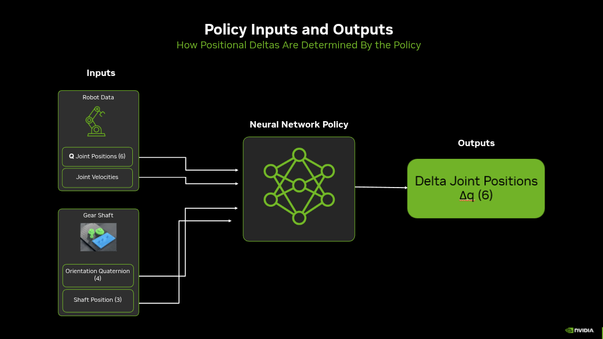
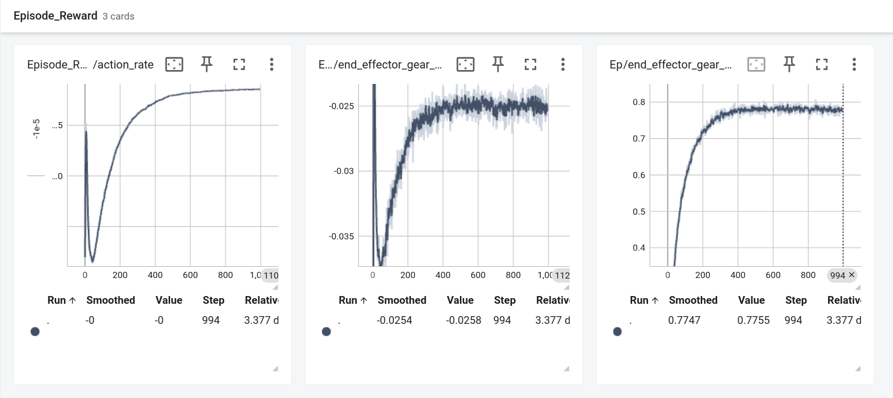

Training a Gear Insertion RL Policy in Isaac Lab#
In this lesson, we will train a reinforcement learning (RL) policy to perform a contact-rich manipulation task. This task requires precise control and interaction with the environment, making it an excellent example for demonstrating the capabilities of RL in robotic manipulation.
Overview#
This lesson is based on the official Isaac Lab gear assembly tutorial. For complete documentation, see: Training a Gear Insertion Policy and ROS Deployment
Visualizing the Environment#

Before diving into the technical details, lets to visualize the task and the state of the policy at the start of training:
${ISAACLAB}/isaaclab.sh -p ${ISAACLAB}/scripts/reinforcement_learning/rsl_rl/train.py \
--task Isaac-Deploy-GearAssembly-UR10e-2F140-v0 \
--num_envs 4
Visual indicators during training:
A 6-DOF UR10e manipulator with a Robotiq gripper attached
Initially, the robot will move somewhat randomly as the policy explores
The gear will be positioned at various distances and orientations relative to the target shaft (due to pose randomization)
At each reset the env resets with a random gear(large, medium, small) being grasped
Example of a trained policy:
After training is complete, a successful policy will consistently insert the gear onto the shaft with precise alignment and smooth control:

Reinforcement Learning Overview#
Reinforcement learning (RL) refers to training agents that learn by trial and error. RL works on the idea that rewarding or punishing an agent for its behavior makes it more likely to repeat or forego that behavior in the future.
The main parts of RL are the agent and the environment. At every step of interaction, the agent observes the current state of the world and decides on an action to take. The environment changes when the agent acts on it, and provides a reward signal—a number that tells the agent how good or bad the current state is. The goal of the agent is to maximize its cumulative reward over time.
The policy is the agent’s “brain”—a neural network that maps observations to actions. Through training, the policy learns which actions lead to higher cumulative rewards, gradually improving its ability to insert the gear successfully.
Figure: During Training.

Figure: During Inference.

At the end of training, you have a trained policy—a neural network that takes the current observations (joint states, gear/shaft poses, etc.) and outputs the actions (e.g. joint targets or torques) that maximize cumulative reward. In other words, the policy has learned to predict which actions to take in each state so that the robot achieves the intended goal (e.g. inserting the gear onto the shaft). Once trained, this policy can be deployed in simulation or on a real robot to perform the task from real-world sensor inputs.
Policy learning progress (during training):
Step 0
Step 5,000
Step 30,000
Step 215,000
Step 235,000
Defining the RL Problem#
To train a reinforcement learning policy for gear assembly, we need to define three key components: observations (what the robot can sense), actions (what the robot can do), and rewards (what we want the robot to achieve).
Observations/Inputs#
The observations define the state information available to the policy. For successful sim-to-real transfer, observations must only include information available from real sensors.
The gear assembly environment uses both proprioceptive (robot’s internal state) and exteroceptive (perception from external sensors) observations:
Observation |
Dimension |
Real-World Source |
Sim Source |
|---|---|---|---|
|
6 (UR10e arm joints) |
UR10e controller |
Ground truth articulation state |
|
6 (UR10e arm joints) |
UR10e controller |
Ground truth articulation state |
|
3 (x, y, z position) |
FoundationPose + RealSense depth |
Ground truth rigid body pose |
|
4 (quaternion orientation) |
FoundationPose + RealSense depth |
Ground truth rigid body pose |
Implementation:
1"""
2${ISAACLAB}/source/isaaclab_tasks/isaaclab_tasks/manager_based/manipulation/deploy/gear_assembly/gear_assembly_env_cfg.py
3"""
4
5@configclass
6class ObservationsCfg:
7 """Observation specifications for the MDP."""
8
9 @configclass
10 class PolicyCfg(ObsGroup):
11 """Observations for policy group."""
12
13 # Robot joint states - NO noise for proprioceptive observations
14 joint_pos = ObsTerm(
15 func=mdp.joint_pos,
16 params={"asset_cfg": SceneEntityCfg("robot", joint_names=[".*"])}
17 )
18
19 joint_vel = ObsTerm(
20 func=mdp.joint_vel,
21 params={"asset_cfg": SceneEntityCfg("robot", joint_names=[".*"])}
22 )
23
24 # Gear shaft pose
25 gear_shaft_quat = ObsTerm(func=mdp.gear_shaft_pos_w)
26
27 gear_shaft_quat = ObsTerm(func=mdp.gear_shaft_quat_w)
Actions/Outputs#
The action space defines how the policy controls the robot. For contact-rich manipulation tasks, we use relative joint position control with a small action scale for precise movements.
Implementation:
1"""
2${ISAACLAB}/source/isaaclab_tasks/isaaclab_tasks/manager_based/manipulation/deploy/gear_assembly/config/ur_10e/joint_pos_env_cfg.py
3"""
4
5# Action scale for contact-rich manipulation (smaller = more precise)
6self.joint_action_scale = 0.025 # ±2.5 degrees per step
7
8self.actions.arm_action = mdp.RelativeJointPositionActionCfg(
9 asset_name="robot",
10 joint_names=[
11 "shoulder_pan_joint",
12 "shoulder_lift_joint",
13 "elbow_joint",
14 "wrist_1_joint",
15 "wrist_2_joint",
16 "wrist_3_joint",
17 ],
18 scale=self.joint_action_scale,
19 use_zero_offset=True,
20)
Key Design Choices:
Relative joint positions: Actions are incremental changes to joint positions, not absolute targets. This provides smoother control.
Small action scale (0.025): For contact-rich tasks requiring precise control, we use ±2.5 degrees per control step. This prevents large, jerky movements that could cause the gear to slip.
use_zero_offset=True: Actions are offsets from the current position, making the policy’s actions relative to its current state.
Rewards - What We Want the Robot to Achieve#
The reward function guides the policy to learn the desired behavior. For gear insertion, we want the gear to align with and insert into the shaft.
Implementation:
1"""
2${ISAACLAB}/source/isaaclab_tasks/isaaclab_tasks/manager_based/manipulation/deploy/gear_assembly/gear_assembly_env_cfg.py
3"""
4
5@configclass
6class RewardsCfg:
7 """Reward terms for the MDP."""
8
9 # Keypoint tracking reward (linear penalty for distance)
10 end_effector_gear_keypoint_tracking = RewTerm(
11 func=mdp.keypoint_entity_error,
12 weight=-1.5,
13 params={
14 "asset_cfg_1": SceneEntityCfg("factory_gear_base"),
15 "keypoint_scale": 0.15,
16 },
17 )
18
19 # Keypoint tracking reward (exponential reward for proximity)
20 end_effector_gear_keypoint_tracking_exp = RewTerm(
21 func=mdp.keypoint_entity_error_exp,
22 weight=1.5,
23 params={
24 "asset_cfg_1": SceneEntityCfg("factory_gear_base"),
25 "kp_exp_coeffs": [(50, 0.0001), (300, 0.0001)],
26 "kp_use_sum_of_exps": False,
27 "keypoint_scale": 0.15,
28 },
29 )
30
31 # Action rate penalty (discourage large, jerky movements)
32 action_rate = RewTerm(func=mdp.action_rate_l2, weight=-5.0e-06)

Visualization of the pose error calculation guiding the policy to align and insert the gear.
Key Design Choices:
Keypoint tracking: Measures the distance between the gear and the target shaft position. Uses two terms:
Linear penalty (
weight=-1.5): Provides a constant gradient pointing toward the goalExponential reward (
weight=1.5): Provides stronger signal when very close to the goal, encouraging precise alignment
Action rate penalty (
weight=-5.0e-06): Penalizes large changes in actions between timesteps, encouraging smooth movementskeypoint_scale=0.15: Defines the characteristic distance (15cm) for the reward shaping

Episode reward and individual reward terms (e.g. action rate, end-effector–gear distance) over training steps. The policy improves rapidly at first, then converges to high reward.
Physics Simulation and Domain Randomization#
After defining what the robot senses (observations), what it can do (actions), and what we want it to achieve (rewards), we need to ensure the simulation behaves like the real world. This involves configuring accurate physics simulation and applying domain randomization to bridge the sim-to-real gap.
This section covers:
Physics parameters: Contact properties, friction, solver settings
Actuator modeling: PD gains, effort limits, joint friction
Domain randomization: Randomizing physics properties to improve robustness
Friction and Material Properties#
Accurate physics simulation is critical for contact-rich tasks. The gear assembly environment configures friction coefficients that match real-world behavior.
Implementation:
1"""
2${ISAACLAB}/source/isaaclab_tasks/isaaclab_tasks/manager_based/manipulation/deploy/gear_assembly/config/ur_10e/joint_pos_env_cfg.py
3"""
4
5@configclass
6class EventCfg:
7 """Configuration for events including physics randomization."""
8
9 # Randomize friction for gear objects
10 small_gear_physics_material = EventTerm(
11 func=mdp.randomize_rigid_body_material,
12 mode="startup",
13 params={
14 "asset_cfg": SceneEntityCfg("factory_gear_small", body_names=".*"),
15 "static_friction_range": (0.75, 0.75),
16 "dynamic_friction_range": (0.75, 0.75),
17 "restitution_range": (0.0, 0.0),
18 "num_buckets": 16,
19 },
20 )
21
22 # Similar configuration for gripper fingers
23 robot_physics_material = EventTerm(
24 func=mdp.randomize_rigid_body_material,
25 mode="startup",
26 params={
27 "asset_cfg": SceneEntityCfg("robot", body_names=".*finger"),
28 "static_friction_range": (0.75, 0.75),
29 "dynamic_friction_range": (0.75, 0.75),
30 "restitution_range": (0.0, 0.0),
31 "num_buckets": 16,
32 },
33 )
These friction values (0.75) were determined through iterative visual comparison:
Record videos of the gear being grasped and manipulated on real hardware
Start training in simulation and observe the live simulation viewer
Look for physics issues (penetration, unrealistic slipping, poor contact)
Adjust friction coefficients and solver parameters and retry
Compare the gear’s behavior in the gripper visually between sim and real
Repeat adjustments until behavior matches
Contact Solver Configuration#
Contact-rich manipulation requires careful solver tuning to handle the complex interactions between the gear and gripper:
1# Robot rigid body properties
2rigid_props=sim_utils.RigidBodyPropertiesCfg(
3 disable_gravity=True,
4 max_depenetration_velocity=5.0,
5 linear_damping=0.0,
6 angular_damping=0.0,
7 max_linear_velocity=1000.0,
8 max_angular_velocity=3666.0,
9 enable_gyroscopic_forces=True,
10 solver_position_iteration_count=4, # Balance accuracy vs performance
11 solver_velocity_iteration_count=1,
12 max_contact_impulse=1e32,
13),
14
15# Articulation properties
16articulation_props=sim_utils.ArticulationRootPropertiesCfg(
17 enabled_self_collisions=False,
18 solver_position_iteration_count=4,
19 solver_velocity_iteration_count=1,
20),
21
22# Contact properties
23collision_props=sim_utils.CollisionPropertiesCfg(
24 contact_offset=0.005, # 5mm contact detection distance
25 rest_offset=0.0,
26),
Important: The solver_position_iteration_count is a critical parameter for contact-rich tasks. Increasing this value improves collision simulation stability and reduces penetration issues, but it also increases simulation and training time. For the gear assembly task, we use solver_position_iteration_count=4 as a balance between physics accuracy and computational performance.
Actuator Modeling#
Accurate actuator modeling ensures the simulated robot moves like the real one. For the UR10e, we model the impedance controller with calibrated stiffness and damping values.
Implementation:
1"""
2${ISAACLAB}/source/isaaclab_tasks/isaaclab_tasks/manager_based/manipulation/deploy/gear_assembly/config/ur_10e/joint_pos_env_cfg.py
3"""
4
5actuators = {
6 "arm": ImplicitActuatorCfg(
7 joint_names_expr=["shoulder_pan_joint", "shoulder_lift_joint",
8 "elbow_joint", "wrist_1_joint", "wrist_2_joint", "wrist_3_joint"],
9 effort_limit=87.0, # From UR10e specifications
10 velocity_limit=2.0, # From UR10e specifications
11 stiffness=800.0, # Calibrated to match real behavior
12 damping=40.0, # Calibrated to match real behavior
13 ),
14}
Domain Randomization of Actuator Parameters
To account for variations in real robot behavior, randomize actuator gains during training:
1robot_joint_stiffness_and_damping = EventTerm(
2 func=mdp.randomize_actuator_gains,
3 mode="reset",
4 params={
5 "asset_cfg": SceneEntityCfg("robot", joint_names=["shoulder_.*", "elbow_.*", "wrist_.*"]),
6 "stiffness_distribution_params": (0.75, 1.5), # 75% to 150% of nominal
7 "damping_distribution_params": (0.3, 3.0), # 30% to 300% of nominal
8 "operation": "scale",
9 "distribution": "log_uniform",
10 },
11)
Joint Friction Randomization
Real robots have friction in their joints that varies with position, velocity, and temperature. For the UR10e with impedance controller interface, we observed significant stiction (static friction) causing the controller to not reach target joint positions.
1joint_friction = EventTerm(
2 func=mdp.randomize_joint_parameters,
3 mode="reset",
4 params={
5 "asset_cfg": SceneEntityCfg("robot", joint_names=["shoulder_.*", "elbow_.*", "wrist_.*"]),
6 "friction_distribution_params": (0.3, 0.7), # Add 0.3 to 0.7 Nm friction
7 "operation": "add",
8 "distribution": "uniform",
9 },
10)
Why Joint Friction Matters: Without modeling joint friction in simulation, the policy learns to expect that commanded joint positions are always reached. On the real robot, stiction prevents small movements and causes steady-state errors. By adding friction during training, the policy learns to account for these effects.
Environment Pose Randomization#
To ensure the policy generalizes to different gear and base positions, we randomize their poses at each episode reset. This trains the policy to handle variations in object placement that occur in real-world deployment.
Gear and Base Pose Randomization:
1"""
2${ISAACLAB}/source/isaaclab_tasks/isaaclab_tasks/manager_based/manipulation/deploy/gear_assembly/config/ur_10e/joint_pos_env_cfg.py
3"""
4
5randomize_gears_and_base_pose = EventTerm(
6 func=gear_assembly_events.randomize_gears_and_base_pose,
7 mode="reset",
8 params={
9 "pose_range": {
10 "x": [-0.1, 0.1], # ±10cm
11 "y": [-0.25, 0.25], # ±25cm
12 "z": [-0.1, 0.1], # ±10cm
13 "roll": [-math.pi/90, math.pi/90], # ±2 degrees
14 "pitch": [-math.pi/90, math.pi/90],
15 "yaw": [-math.pi/6, math.pi/6], # ±30 degrees
16 },
17 "gear_pos_range": {
18 "x": [-0.02, 0.02], # ±2cm relative to base
19 "y": [-0.02, 0.02],
20 "z": [0.0575, 0.0775], # 5.75-7.75cm above base
21 },
22 "rot_randomization_range": {
23 "roll": [-math.pi/36, math.pi/36], # ±5 degrees
24 "pitch": [-math.pi/36, math.pi/36],
25 "yaw": [-math.pi/36, math.pi/36],
26 },
27 },
28)
Robot Initial State Randomization:
1"""
2${ISAACLAB}/source/isaaclab_tasks/isaaclab_tasks/manager_based/manipulation/deploy/gear_assembly/config/ur_10e/joint_pos_env_cfg.py
3"""
4
5set_robot_to_grasp_pose = EventTerm(
6 func=gear_assembly_events.set_robot_to_grasp_pose,
7 mode="reset",
8 params={
9 "robot_asset_cfg": SceneEntityCfg("robot"),
10 "rot_offset": [0.0, math.sqrt(2)/2, math.sqrt(2)/2, 0.0],
11 "pos_randomization_range": {
12 "x": [-0.0, 0.0],
13 "y": [-0.005, 0.005], # ±5mm variation in y-axis
14 "z": [-0.003, 0.003], # ±3mm variation in z-axis
15 },
16 "gripper_type": "2f_140",
17 },
18)
This initializes the robot to a pre-grasp pose with small variations, simulating slight differences in gripper positioning when grasping the gear.
Train RL Policy#
Visualize the Environment#
First, launch the training with a small number of environments and visualization enabled to verify that the environment is set up correctly:
${ISAACLAB}/isaaclab.sh -p ${ISAACLAB}/scripts/reinforcement_learning/rsl_rl/train.py \
--task Isaac-Deploy-GearAssembly-UR10e-2F140-ROS-Inference-v0 \
--num_envs 4
This will open the Isaac Sim viewer where you can observe the training process in real-time.
What to Expect: In the early stages of training, you should see the robots moving around with the gears grasped by the grippers, but they won’t be successfully inserting the gears yet. This is expected behavior as the policy is still learning. Once you’ve verified the environment looks correct, stop the training (Ctrl+C) and proceed to full-scale training.
Full-Scale Training with Video Recording#
Now launch the full training run with more parallel environments in headless mode for faster training. We’ll also enable video recording to monitor progress:
Note: Do not run live in class.
${ISAACLAB}/isaaclab.sh -p ${ISAACLAB}/scripts/reinforcement_learning/rsl_rl/train.py \
--task Isaac-Deploy-GearAssembly-UR10e-2F140-ROS-Inference-v0 \
--headless \
--num_envs 256 \
--video --video_length 800 --video_interval 5000
This command will:
Run 256 parallel environments for efficient training
Run in headless mode (no visualization) for maximum performance
Record videos every 5000 steps to monitor training progress
Save videos with 800 frames each
Training typically takes ~12-24 hours for a robust insertion policy. The videos will be saved in the logs directory and can be reviewed to assess policy performance during training.
Note: GPU Memory Considerations: The default configuration uses 256 parallel environments, which should work on most modern GPUs (e.g., RTX 3090, RTX 4090, A100). For better sim-to-real transfer performance, you can increase
solver_position_iteration_countfrom 4 to 196 for more realistic contact simulation, but this requires a larger GPU (e.g., RTX PRO 6000 with 40GB+ VRAM).
Sim-to-Real Transfer#
The policy is numbers in → numbers out. For it to work on the real robot:
Observations in sim and real must match (same quantities, units, order).
Output response on the real robot must match the sim: the robot must respond to predicted actions the same way (actuation, latency).